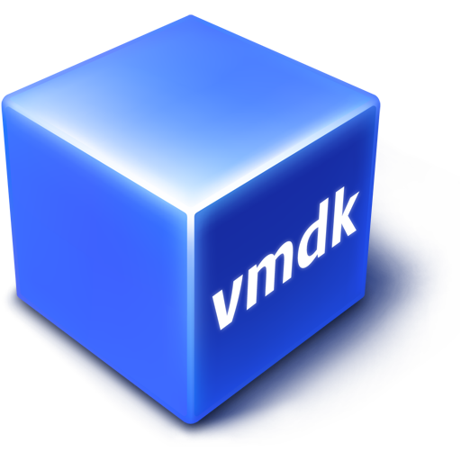

OSGeoLive 15.0 Sisältö¶
Symbology
 Is an OSGeo Project
Is an OSGeo Project Included only on OSGeoLive VMDK version
{kind=link}
Työasema GIS¶
Yleinen paikkatietojen katselu, muokkaus ja analyyointi työasemaympäristössä
QGIS - [Pika-aloitus]
 SAGA - [Pika-aloitus]
SAGA - [Pika-aloitus]
uDig - [Pika-aloitus]
Selainkäyttöinen GIS¶
Yleinen GIS katselu, muokkaus ja analysointi selaimessa
GeoMoose - [Pika-aloitus] - Paikkatieto rakenteet verkkoon
GeoNode - [Pika-aloitus] - Paikkatiedon sisällön hallintajärjestelmä
Mapbender - [Pika-aloitus] - Geoportalin Rakenteet
OpenLayers - [Pika-aloitus] - Selain karttojen kirjasto
GeoStyler - [Quickstart] - Generic Styler For Geodata
Cesium - [Pika-aloitus] - 3D maailmat ja 2D kartat selaimessa
GeoExt - [Quickstart] - JavaScript Toolkit Web Mapping
Leaflet - [Pika-aloitus] - Mobiili ystävälliset vuorovaikutteiset kartat
Verkkopalvelut¶
Paikkatiedon julkaiseminen verkossa
deegree - [Quickstart] - OGC Web Services
GeoNetwork - [Pika-aloitus] - Metadata Luettelo
GeoServer - [Pika-aloitus] - OGC-verkkopalvelut
MapCache - [Quickstart] - OGC Web Services
MapServer - [Pika-aloitus] - OGC-verkkopalvelut
pycsw - [Pika-aloitus] - Metadata Luettelo
PyWPS - [Pika-aloitus] - Web Processing Service
istSOS - [Pika-aloitus] - Sensorien havainnointipalvelu
MapProxy - [Pika-aloitus] - Proxy WMS & tiilipalveluille
pygeoapi - [Quickstart] - OGC Web Services
Zoo Project - [Pika-aloitus] - Verkossa prosessointipalvelu
actinia - [Quickstart] - Processing of Geographical Data
EOxServer - [Pika-aloitus] - Verkkopalvelu alueellisesta kattavuudesta
ncWMS - [Quickstart] - Web Map Service
QGIS Server - [Pika-aloitus] - Verkkokarttapalvelu
Re3gistry - [Quickstart] - Management of reference codes
t-rex - [Quickstart] - Vector Tile Service
52 North SOS - [Pika-aloitus] - Sensorien havainnontipalvelu
52 North WPS - [Pika-aloitus] - Verkkopohjainen prosessointipalvelu
Tietovarastot¶
Paikkatiedon tallennnus
PostGIS - [Pika-aloitus] - Tietokanta paikkatiedolle
pgRouting - [Pika-aloitus] - Reititys PostGISille
Rasdaman - [Pika-aloitus] - Moniulotteinen rasteritietokanta
SpatiaLite - [Pika-aloitus] - Kevyt tietokanta paikkatiedolle
Navigointi ja kartat¶
Marble - [Pika-aloitus] - Virtuaalinen maapallo
iD editor - [Pika-aloitus] - OpenStreetMap verkkomuokkain
JOSM - [Pika-aloitus] - OpenStreetMap Työasema muokkain
GpsPrune - [Pika-aloitus] - Katsele, muokkaa ja muunna GPS -jälkiä
OpenCPN - [Pika-aloitus] - Merellinen GPS karttaplotteri
OpenStreetMap - [Pika-aloitus] - OpenStreetMap Työkalut
Työkalut paikkatiedolle¶
Erityiset työkalut analysointiin
OTB - [Pika-aloitus] - Kuvankäsittely
GMT - [Quickstart] - Cartographic Rendering
Jupyter Notebook - [Quickstart] - Mixing rich media in presentations
Mapnik - [Pika-aloitus] - Kartografinen mallinnus
R - [Pika-aloitus] - Tilastollinen ohjelmointi
Erityisalojen paikkatietosovellukset¶
Sovellutukset jotka on tarkoitettu erityisaloille
XyGrib - [Quickstart] - Weather Forecast Maps
Tiedot¶
Paikkatiedon tietojoukot
Natural Earth - Globaalit datajoukot
North Carolina USA Educational dataset
NetCDF Data Set - Aikasarjoja lämpötilasta ja sademääristä
OpenStreetMap - Otteita OpenStreetMapista
Paikkatietokirjastot¶
GDAL/OGR - [Pika-aloitus] - Paikkadatan muunnostyökalut
GEOS - C/C++ paikkatietokirjasto
GeoTools - Java pohjaiset paikkatiedon työkalut
PROJ - [Quickstart] - Coordinate Reference System Libraries
JTS - Java Topologinen kirjasto
Paikkatietostandardit¶
OGC - Open Geospatial Consortium
INSPIRE - Paikkatiedon infrastruktuuri Euroopassa